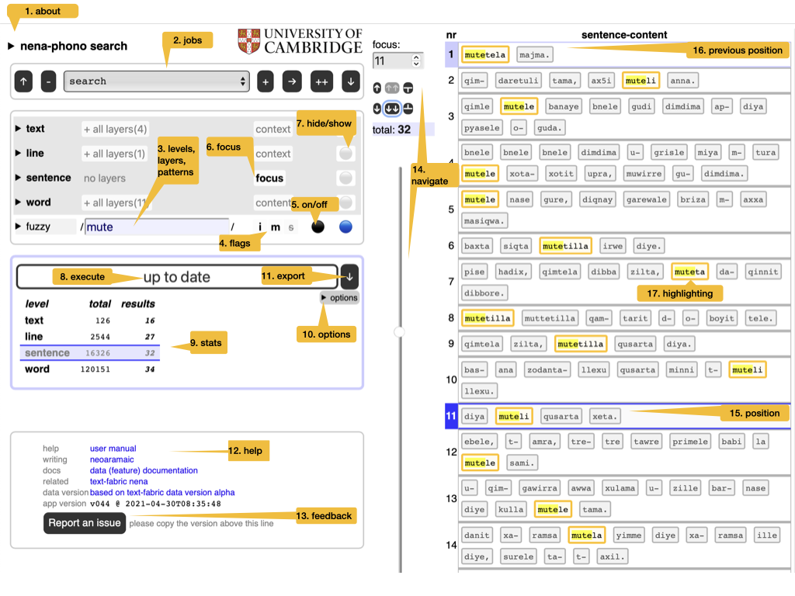
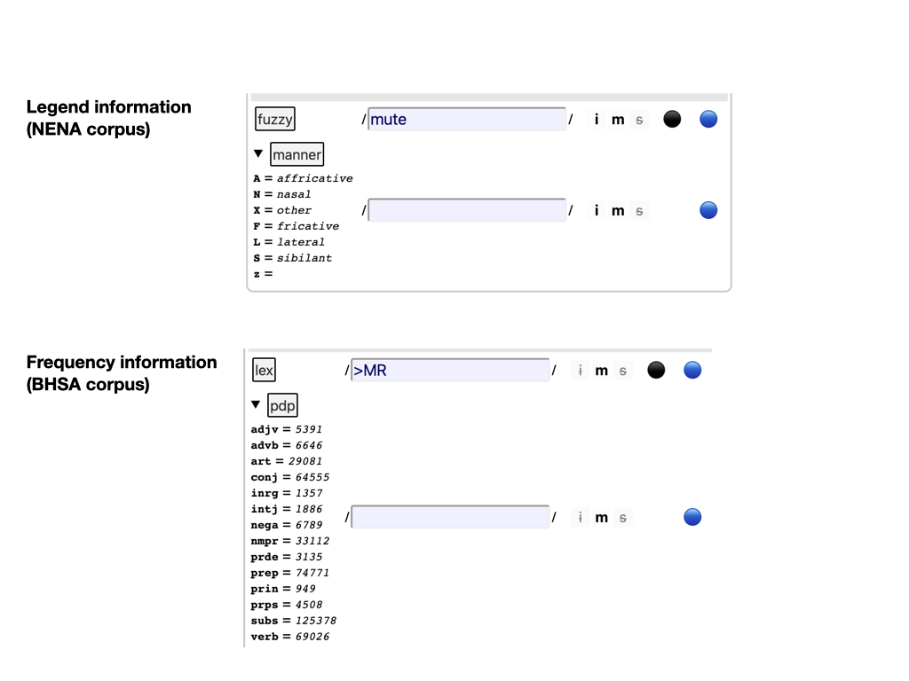
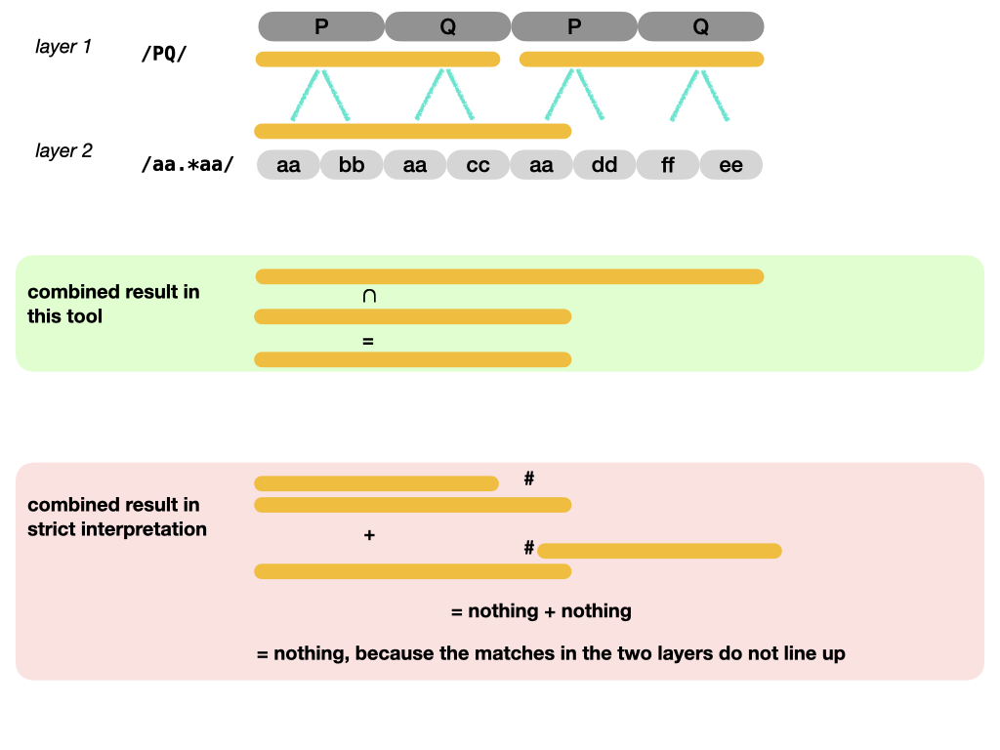
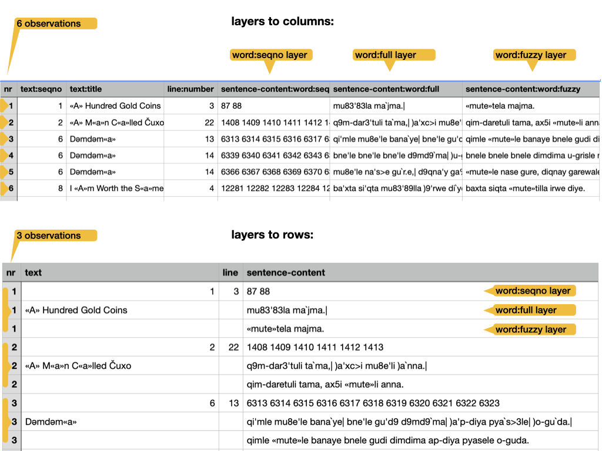
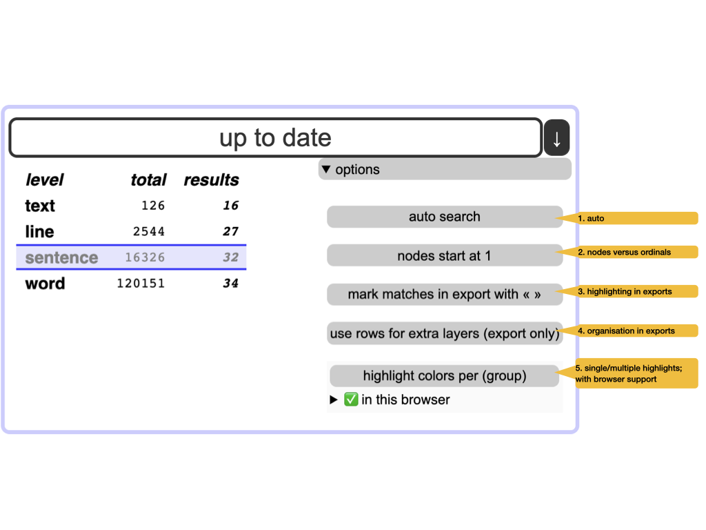

Module tf.about.clientmanual
Quick start
This is the manual for the full interface.
There is a separate manual for the simplified interface:
tf.about.manual.

- 1. about
- Read the colophon, with provenance and license information.
- 2. jobs
-
Manage your search tasks. They are remembered by your browser. You can start new jobs, rename, duplicate and delete them. You can import jobs from file and export them to file.
Hint
Use this when switching between browsers. That includes sharing jobs with other people.
- 3. levels, layers, regexes
-
The corpus is represented in multiple ways: the layers. They have been generated by choosing a level (such as text, line, word), and representing the objects of that level by some of their features (such as title, number, transcription). Each layer can be searched by means of a search pattern. Such patterns are technically regular expressions; from now on we use the term regex, plural regexes. To see what it means to search in several layers and levels at the same time: see section Meaning below.
Hint
Read background on regexes and cheat sheet.
- 3a. legend
-
Some layers have a triangle in front of their names. These are layers that consist of a limited amount of keywords. If they are acronyms, you can see their legend here. Otherwise, you see a frequency list of there values here.

- 3b. text of a layer
- You can click on the name of each layer to show and hide the full text of that layer. So that you know the material in which you are searching.
- 4. flags
-
When searching with regexes, you can alter their interpretation by setting some flags:
i: case-insensitive;m: multiline:^and$match around embedded newlines;s: single-string:.also matches newlines.
- 5. on / off
-
Regexes can be switched off and on.
Hint
Use this to explore the effect of individual regexes.
- 6. focus
- The level that corresponds with a single row in the results table. Think of result rows as observations with features.
- 7. hide / show
-
Whether a layer/level should show up in the results. Showing a level means showing their objects by their identifying numbers. See option nodes and ordinals below.
Hint
You can show layers in which you do not search, and hide layers in which you do search.
- 8. execute
-
Press this to execute the current search job.
Hint
There is an option to do this automatically whenever you have changed something in the search criteria.
- 9. stats
- Statistics of the current search results, compared to the statistics of the whole corpus.
- 10. options
-
Modify the behaviour of search/export. See Options below.
Special characters
If your corpus has special characters, and you want to type them into the patterns, you can copy them from the Special characters button.
Just click on the character you need, and it is copied on the clipboard, so that you can paste it anywhere you like (even in other applications).

Simplified interface
Here is the button to switch back and forth between the simplified and the full interface.
- 11. export
-
Export the search results as a tab-separated file (
.tsv). This file can be opened in Excel. All results are exported, not only the ones that show on the current page. The level of detail depends on the currently selected focus level and the visible layers as set by hide / show.Hint
The precise organization of the export may depend on some of the options. See Export below.
- 12. help
- Various links to information that you frequently need: this help, the data features of the corpus, related corpus data.
- 13. feedback
- File an issue on GitHub; please copy and paste the version of this app in any issue you file.
- 14. navigate
-
Walk through the results in various ways:
- manual entry of the position number,
- small jumps back and forth,
- big strides with the slider.
Hint
Use keyboard shortcuts, all shortcuts need to be pressed with modifier keys:
browser Windows - Linux - Mac Firefox Alt + Shift Alt + Shift Ctrl + Option Chrome Alt + Shift Alt Ctrl + Option Edge Alt + Shift Ctrl + Option Safari Ctrl + Option shortcut direction amount mNA manual entry of the result number nnext one pprevious one bback a batch (half a screenful) fforward a batch (half a screen) sstart all the way eend all the way - 15. position
- The current position in the results table is marked.
- 16. previous position
- The previous position in the results table is also marked, in a slightly less conspicuous way.
- 17. highlighting
-
The portions in the layer that match the corresponding regex are highlighted.
Hint
Highlights are exported by enclosing the text in « and », but you can switch this off by means of an option. See Options below.
- 18. links to online
- The top level layers are linked to an online representation of the corpus. For example, for NENA it is the GitHub repository where the source texts are stored. For the BHSA it is SHEBANQ.
Meaning
Levels
Your corpus is divided into levels, e.g. text/line/sentence/word/.
At each level there are objects in the corpus and they can be represented in certain ways:
- text are represented by their titles;
- lines are represented by their numbers;
- words are represented by the strings of which they are composed.
Layers
Per level, there may be more than one way to represent the objects. For example, at the word level, you may have representations in the original script in UNICODE, but also various transliterations in ASCII.
All these representations are layers that you can search. For example, the NENA corpus contains various text representations, among which several are dedicated to phonetic properties.

Layers do not have to correspond with the text of the corpus. They can be based of arbitrary annotations that exist in the corpus.
Combined search
In order to search, you specify search patterns for as many of the available layers as you want.
When the search is performed, all these layers will produce results, and the results in one layer will be "intersected" with the results in all other layers.
It might seem as if we are comparing apples and oranges, but our corpus has the structure to enable exactly this kind of operation. At each level we have a set of textual objects, called nodes, and for each node we know exactly which textual positions they are linked to.
When we compare the search results of two layers in one level, we know the textual position of each result in each layer. Hence we also know the nodes in those results. We take all nodes that are involved in the results of one layer as a set. We do the same for the other layer. Then we take the intersection of those sets. The resulting set is the node set defined by the combined results in the two layers. When we display them, we show the results in both layers, by showing the material of the result nodes according to the layer and we highlight the portions that match the regular expression in that layer.
See the top half in the next figure.

The bottom half of the figure above shows what we do if we have to compare the results of layers in different levels. In that case, those layers have different kinds of result nodes, and we cannot take the intersection directly.
However, we can project the nodes of one level to those of another level by using the notion of embedding.
We project a node upward by mapping it to the node that embeds it.
We project a node downward by mapping it to all nodes that are embedded in it.
By projecting the result nodes of one level to another level, we end up with two node sets at the same level that we can intersect.
Beware of complicated criteria
Before you devise sophisticated criteria, note that this search engine is not very refined in taking intersections. It takes the intersections of the joint results of the matches in the layers. It will not take the intersections of the individual matches. See the next figure for the difference.

If you look for /aa.*aa/ in the bottom layer, and then want to restrict the results
by specifying that each result occurs within a /PQ/ match of the top layer,
you will be disappointed.
That will only work if we had implemented a strict semantics: the individual matches in the different layers should match exactly (after projection).
Instead, in our loose semantics, matches in one layer are not discarded, but intersected with matches in an order layer.
In fact, there is a whole spectrum of strictness, where it depends on the intention of the search which degree of strictness is desirable.
For now, that is becoming way to complex, both to be usable and to be implementable. That is why we have opted for the lax interpretation.
The bottom-line is: use the search tool to grab the things that are potentially of interest. If you need to pinpoint further, export the results to Excel and use other tools/methods to achieve that.
Export
You can export the search results to Excel (or rather, a tab-separated file, .tsv).
When you do that, all results will get exported, not only the ones that show
on the interface.
The organization of the exported results reflects the interface. It makes sense to think of the rows as observations, and the columns as properties of those observations.
We may have issued multiple regexes to multiple layers, so we have to define our concept of observation.
The first ingredient is our focus level: the objects in this level are the units of observation. For each focus object there is a row in the result table.
The focus objects have context and content.
The context consists of the objects that enclose the focus object. For each level of context objects there will be a column in the result row.
The content consists of the objects contained in the focus objects. We have a single column for the content of the focus objects.
Example
If the focus level is sentence then the focus objects are sentences.
The context of a sentence consists of the lines and texts that contain that sentence. In this corpus each sentence has exactly 1 line and exactly 1 text in which it is contained. In other corpora that might be different: it could be more or less.
The content of a sentence consists of all of its word objects, concatenated.
If the focus level is line, then the focus objects are lines.
The context of a line consists of exactly 1 text that contains the line.
The content of a line consists of all of its sentence and word objects, properly nested and concatenated.
An object is distinct from its content
When we represent an object, we use the layers of the level of that object.
Take a text for example. There are a few layers for a text, such as dialect, place, title. Hence a text is represented by just its title, or its place, or its dialect, depending on which layer you use for the representation.
The content of a text is a much bigger thing. It is the collection of all its line, sentence, and word objects represented in their own layers.
When we represent only the object, we call it a shallow representation. When we represent the content of an object, we call it a deep representation.
An observation is represented by:
- shallow representations of the context objects,
- a shallow representation of the focus object,
- a deep representation of the focus object.
All objects are represented ultimately by their material in the layers. When we display results or export them, we present all layers that you have selected by means of hide / show.
Multiple layers
If multiple layers have been selected for some levels, we show them all on the interface in a graceful way. However, the format of a table is much more restricted, and we have to make a tough choice here: we can use extra columns or extra rows for multiple layers. Both have advantages and disadvantages.
layers to columns:
+: one result, one row, good for post-processing-: the layers of one object do not line up, difficult visual inspection
layers to rows:
-: one result, multiple rows, complicates post-processing+: the layers of one object line up, comfortable visual inspection
Observe the difference:

Options

- 1. auto
- Executes the search automatically whenever you have changed some criterion. Also updates the results when you have modified the focus and visibility of layers.
- 2. nodes versus ordinals
-
Each object in the corpus has a unique number: its node number. Within a level, we can also enumerate all its objects, starting with 1. The ordinals identify objects uniquely within their level. You can choose which of these numbers you want displayed.
Hint
Use nodes for interoperability with TF; otherwise ordinals are more intuitive.
- 3. highlighting in exports
- Highlighted matches are a valuable outcome of a search. But in exports, the highlight characters « » may hinder further processing. So you can omit them.
- 4. organization of exports
-
When several layers are visible for a level, the question arises: how should we organize them in exported results? There are two options:
- use extra rows for the extra layers;
- use extra columns for the extra layers.
You choose! The difference is shown in section Exports above.
Hint
Use extra rows if you rely on visual inspection of the exported file in Excel. Use extra columns if you want to process the exported file by means of other tools, such as
pandasorR. - 5. single or multiple highlights
-
If you use
( )for grouping in your regexes, the parts of the results that match these groups can be highlighted with different colours.Hint
Not all browsers support this; the interface shows whether your browser supports it, and which other browsers support it.
Hint
This is handy for cases where you search for twice the same thing in a sentence, for instance. You can have both matches coloured differently.
Background information
Layered-search is a way of full-text searching your corpus by means of regular expressions. but with a twist: you can search in several layers of the corpus by means of several regexes in parallel. It is a method to make good use of the annotations that exist in the corpus at various levels.
Regular expressions are a key tool for specifying sophisticated search patterns. Their theoretical foundation was laid in the 1950s, and by now they have been implemented in all major programming languages and in all powerful text-editors.
If this is the first time you encounter them, it will pay off to get to know them well, because it is very likely that you encounter them again.
For more background, read Wikipedia.
The search interface as app
We have implemented layered search as an offline Single Page Application.
The app consists of a single HTML file (app.html),
a CSS file, PNG files (logos) and JavaScript files.
The corpus data is in a big JavaScript file, the corpus configuration in a small one.
The remaining JavaScript files are the modules of the program.
Modern browsers can take in modular JavaScript, except when you have the HTML file
locally on your computer and you open it with a double click.
Your browser has then file:// in its URL bar, and in that case modular JavaScript does
not work.
To overcome that, we have also bundled the program in a single file, and that is included by
app-local.html.
From within the app, you can download a zip file with app-local.html in it,
so that you can have the full search experience completely off-line.
Also when you have opened this page over the internet, once your browser has downloaded the complete app, all interaction between you and the search app happens at your browser, without further internet connection (except when you navigate to external links).
As a consequence
- this app works without any kind of installation
- it does not collect data about you
- it does not use cookies.
- it works without internet connection
When the browser remembers your previous jobs,
it does not use cookies for it but
localStorage,
which other sites cannot read.
Making this app
The construction of this app relies very much of the organization of the corpus as a TF dataset.
The process of creating a layered search functionality is baked into TF.
The designer needs to specify the layers in a .yaml file
and write a small piece of code to generate the data for the layers
from the corresponding TF dataset.
See e.g.
app-nena/layeredsearch.
All the rest (building, shipping, and deploying the app) is then automatic,
See tf.client.make.build.
The first layered search interface created this way is one for the NENA corpus.
We intend to make more interfaces for other TF corpora, reducing and streamlining the preparation effort in the process.
Credits
The idea for this app came out of a discussion of Cody Kingham and me about how we could make a simple but usable search interface for people that need to get hands on with a TF corpus.
Given that we have the corpus data at our finger tips through TF,
but that TF Query (tf.about.searchusage) does not cover over all use cases,
and requires installing Python,
we adopted the approach to assemble data
and power a simple JavaScript program with it.
The first implementation of these idea was funded by Prof. Geoffrey Khan, reviewed by Cody Kingham and the people of Cambridge Semitics Lab and eventually written by Dirk Roorda.
Expand source code Browse git
"""
.. include:: ../docs/about/clientmanual.md
"""